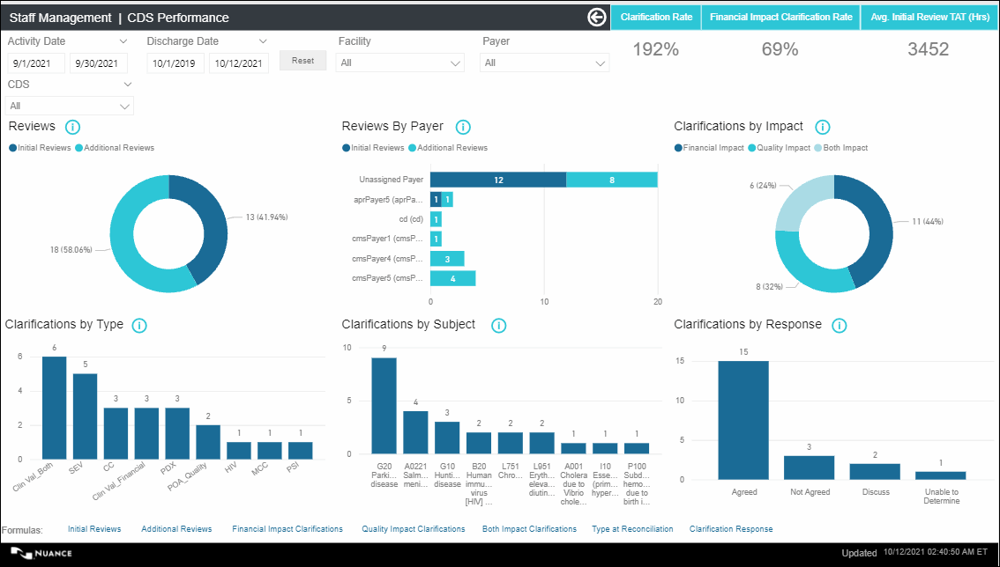
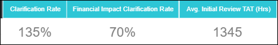

CDS Performance
Overview: As a CDI Manager, I need a CDS Performance dashboard so that I can analyze the individual and detailed performance of the CDSs and analyze their activity.
Navigation: On the Analytics home page left side panel, navigate to .
CDS Performance displays the following KPI Cards: Clarification Rate, Financial Clarification Rate, Avg Initial Review TAT (Hrs)
-
Reviews
-
Reviews by Payer
-
Clarifications by Impact
-
Clarifications by Type
-
Clarifications by Subject
-
Clarifications by Response
On the top panel, you can select desired values for the slicers (refer Report Slicers ) and the corresponding data gets filtered in the tabular chart.
For filters all pages, refer Filters on all Pages.
For Footnotes, refer Footnotes .
Default Display: By default, the dashboard displays the data for the inpatient encounters for which activity has been performed in the last one calendar month. Click the ‘Reset’ button to reset both activity date and discharge date and select the required date.


| KPI Card | Description | Formula/Calculation | Exclusion Criteria (if any) |
|---|---|---|---|
| Clarification Rate |
This KPI metric displays the 'Clarification Rate' for the selected time period. Out of total encounters reviewed, the percentage of sent clarifications with the status other than DELETED or RETRACTED. |
Clarification Rate = (Count of clarifications with the status other than DELETED or RETRACTED sent for the reviewed encounters/Count of Initial Reviews performed)*100 Rounded to 0 decimal places. |
Encounters with "Review Not Needed" encounter status are excluded from this metric calculations. Format: 25% |
| Financial Impact Clarification Rate |
This KPI metric displays 'Financial Impact Clarification Rate' for the selected time period. Out of total encounters reviewed, the percentage of Encounters with Financial Impact. |
Financial Impact Clarification Rate = (Encounters with Financial Impact Clarifications /Encounters Reviewed (Initial Reviews) )* 100). Rounded to 0 decimal places. Financial Impact Clarification Rate = (Count of reviewed encounters with at least one Financial Impact clarification with the status other than DELETED or RETRACTED / Count of encounters with an initial review date) X 100. Clarification with a standard or custom ‘Primary Type at Reconciliation’ defined as ‘Financial or BOTH’ in the administrator configuration is a Financial Impact Clarification. |
Encounters with "Review Not Needed" encounter status are excluded from this metric calculations.Format: 37% |
| Avg. Initial Review TAT (Hrs) | This KPI metric displays 'Avg. Initial Review TAT (Hours)' for the selected time period. The number of hours between encounter Admit Date/time and the date/time, the Working Review was first created. |
(Initial Review TAT (hours) for an encounter = Initial Review Date/Time- Admit Date/Time) hours. Avg. Initial Review TAT(Hours) = Sum of Initial Review TAT(Hours) of all the reviewed encounters / Encounters Reviewed (Initial Reviews). |
Encounters with "Review Not Needed" encounter status are excluded from this metric calculations. Format: 150 |
Reviews
The Reviews chart displays the data for Initial Reviews and Additional Reviews for each CDS in the selected activity date range.
| Metric | Description | Tooltip |
|---|---|---|
| Initial Reviews |
This metric displays the count of encounters with an initial review date/time in the selected activity date range. Note:
Initial Review Date/Time falls in the selected activity date
range. Encounters with "Review Not Needed" encounter status are
excluded from this metric calculations. |
|
| Additional Reviews |
This metric displays the count of additional reviews performed by the
CDS in the selected activity date range.
Note: Additional Review
Date/Time falls in the selected activity date range. Encounters
with "Review Not Needed" encounter status are excluded from this
metric calculations. Additional Review Types:
Activity Type 'Post-Discharge Review' is not considered in the Additional Reviews calculation. |
Reviews by Payer
The Reviews by Payer chart displays the count of Initial Reviews and Additional Reviews performed against each Payer for each CDS in the selected activity date range.
- X axis displays the Payer names (Format : Payer Description (Payer ID)
- This chart displays count of Initial Reviews and Additional Reviews against each Payer.
| Metric | Description | Tooltip |
|---|---|---|
| Initial Reviews |
This metric displays the count of encounters with an initial review date/time in the selected activity date range. Note:
Initial Review Date/Time falls in the selected activity date
range. Encounters with "Review Not Needed" encounter status are
excluded from this metric calculations. |
Displays the Total Reviews. Total Reviews = (Initial Reviews +
Additional Reviews).
Note: Review Date/Time (Initial Review and
Additional Review dates) falls in the selected activity date
range. Encounters with "Review Not Needed" encounter status are
excluded from this metric calculations. |
| Additional Reviews |
This metric displays the count of additional reviews performed by the
CDS in the selected activity date range.
Note: .
|
Clarifications by Impact
The Clarifications by Impact chart displays the count of sent clarifications with Financial Impact, KPI of Quality Impact for each CDS in the selected activity date range.
- This chart displays the count and percentage of Financial Impact Clarifications, Quality Impact Clarifications and Both Impact Clarifications.
Info icon(text on hover): Encounter Status: Includes all encounter statuses except 'Review Not Needed'. ; Clarification Status: Includes all clarification statuses except 'Removed' or 'Retracted'.
| Metric | Description | Tooltip |
|---|---|---|
| Financial Impact |
This metric displays the count of Financial Impact clarification with at least one instance sent in the selected activity date range. Note:
|
Displays the the below details:
|
| Quality Impact |
This metric displays the count of Quality Impact clarification with
at least one instance sent in the selected activity date
range.
Note: .
|
Displays the the below details:
|
| Both Impact | This metric displays the count of Both Impact clarification with
at-least one instance sent in the selected activity date
range. Note: .
|
Displays the the below details:
|
Clarifications by Type
The Clarifications by Type chart displays the count of sent clarifications against each 'Type at Reconciliation' for each CDS in the selected activity date range.
- This chart displays the count of sent clarifications with 'Type at Reconciliation'. Example: The count of sent clarifications raised by the CDS with 'Type at Reconciliation' as PDX, MCC, etc.
- Both standard and custom 'Type at Reconciliation' values are considered. X axis displays the available 'Type at Reconciliation' (Both standard and custom).
- Y axis displays the count of sent clarifications against that 'Type at Reconciliation' value
- Tooltip: Displays Type at Reconciliation,Clarifications Sent
Info icon(text on hover): Encounter Status: Includes all encounter statuses except 'Review Not Needed'. Clarification Status: Includes all clarification statuses except 'Removed' or 'Retracted'. Standard and custom ‘Primary Type at Reconciliation’ are considered.
Clarifications by Subject
The Clarifications by Subject chart displays the count of sent clarifications against each Clarification Subject for each CDS in the selected activity date range.
- X axis displays the Clarification Subject
- This chart displays count of clarifications sent for each Clarification Subject
- Tooltip: Displays Subject, Clarifications Sent
Info icon(text on hover): Encounter Status: Includes all encounter statuses except 'Review Not Needed'. ; Clarification Status: Includes all clarification statuses except 'Removed' or 'Retracted'.
Clarifications by Response
The Clarifications by Response chart displays the count of sent clarifications responded against each Response Type for each CDS in the selected activity date range..
- X axis displays the available Response Types.
- Y axis displays the count of sent clarifications responded.
- This chart displays count of clarifications for each Response Type.
- Tooltip: Displays Clarifications Sent, Clarifications Responded.
Info icon(text on hover): Encounter Status: Includes all encounter statuses except 'Review Not Needed'. ; Clarification Status: Includes all clarification statuses except 'Removed' or 'Retracted'.
- Response is treated as an attribute to the clarification sent.
- Clarification Instance Sent Date falls in the selected activity date range. (Start and End Date).
- Instance Response Date may not fall in the selected activity date range.
- Clarification Response:
- For Activity Date - Displays Clarifications with Final/Not Final Response
- For Discharge Date- Displays Clarifications with Final Response
- Clarifications with response other than Pending, Retracted, or No Response are considered.
- Clarifications for "Review Not Needed" encounter status is not considered for this metric calculation.
- Clarifications with Status 'DELETED' or 'RETRACTED' are excluded from the count.
| Slicer | Description |
|---|---|
| Activity Date |
|
| Discharge Date |
|
| Reset |
Allows you to reset the Activity Date range. Tooltip: Use "Ctrl + Click" to reset both Activity Date and Discharge Date. |
| Facility |
|
| Payer |
|
| CDS |
|
| Filter | Description |
|---|---|
| Patient Type |
|
| Unit |
|
| Admit Service |
|
| Visit Type |
|
| Weekend Only Stay |
|
| Formula | Text on Hover |
|---|---|
| Initial Reviews |
The count of encounters with an initial review
date/time.
Note: When Activity Date is selected , Initial
Review Date/Time falls in the selected activity date
range. |
| Additional Reviews |
The count of additional reviews performed for the reviewed
encounter.
Note: When Activity Date is selected, Additional
Review Date/Time falls in the selected activity date
range. |
| Financial Impact Clarifications |
Financial Impact Clarifications: Clarifications with standard or custom ‘Primary Type at Reconciliation’ defined as ‘Financial’ in the administrator configuration. |
| Quality Impact Clarifications |
Quality Impact Clarifications: Clarifications with standard or custom ‘Primary Type at Reconciliation’ defined as ‘Quality’ in the administrator configuration. |
| Both Impact Clarifications |
Both Impact Clarifications: Clarifications with standard or custom ‘Primary Type at Reconciliation’ defined as ‘Financial’ and 'Quality' in the administrator configuration. |
| Type at Reconciliation |
Primary Rec Type = The Primary Rec Type (standard or custom) associated with the clarification. ;Other Rec Type= The Other Rec Types (standard or custom) associated with the clarification. |
| Clarification Response |
Clarifications with response other than Pending, Retracted, or No Response are considered. Clarifications may or may not have a FINAL response. |